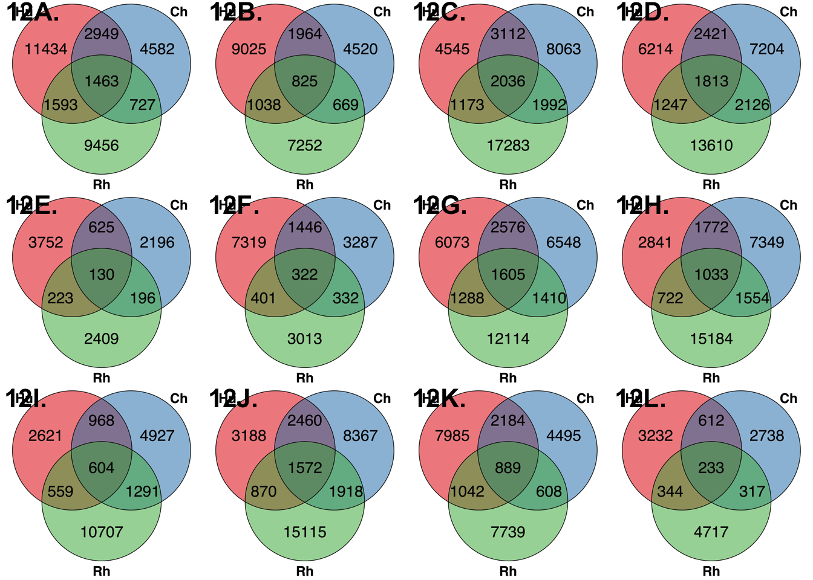

This file is to generate figures and tables for the DNA methylation sections of the paper.
library(VennDiagram)## Loading required package: grid## Loading required package: futile.loggerlibrary(cowplot)## Loading required package: ggplot2##
## Attaching package: 'cowplot'## The following object is masked from 'package:ggplot2':
##
## ggsavelibrary("RColorBrewer")
colors <- colorRampPalette(c(brewer.pal(9, "Blues")[1],brewer.pal(9, "Blues")[9]))(100)
pal <- c(brewer.pal(9, "Set1"), brewer.pal(8, "Set2"), brewer.pal(12, "Set3"))
draw_venn_methylation <- function(hs, cs, rs, hc, hr, cr, hcr){
draw.triple.venn(hs+hc+hr+hcr, cs+hc+cr+hcr, rs+hr+cr+hcr, hc+hcr, cr+hcr, hr+hcr, hcr, filename = NULL, category = c("Hu", "Ch", "Rh"), fill = pal[1:3], main.cex = 3, cat.cex = 3, cex=3.5, lty=1, height=2000, width=2000, fontfamily = "sans", cat.fontfamily = "sans", main.fontfamily = "sans", cat.fontface = "bold", main.fontface = "bold", cat.dist = 0.05)
}
# Hypermethylated
# Heart kidney
svg("../data/Hyper_heart_kidney.svg", width = 7.2, height = 7.2)
draw_venn_methylation(11434, 4582, 9456, 2949, 1593, 727, 1463)## (polygon[GRID.polygon.1], polygon[GRID.polygon.2], polygon[GRID.polygon.3], polygon[GRID.polygon.4], polygon[GRID.polygon.5], polygon[GRID.polygon.6], text[GRID.text.7], text[GRID.text.8], text[GRID.text.9], text[GRID.text.10], text[GRID.text.11], text[GRID.text.12], text[GRID.text.13], text[GRID.text.14], text[GRID.text.15], text[GRID.text.16])dev.off()## quartz_off_screen
## 2# Heart liver
svg("../data/Hyper_heart_liver.svg", width = 7.2, height = 7.2)
draw_venn_methylation(4545, 8063, 17283, 3112, 1173, 1992, 2036)## (polygon[GRID.polygon.17], polygon[GRID.polygon.18], polygon[GRID.polygon.19], polygon[GRID.polygon.20], polygon[GRID.polygon.21], polygon[GRID.polygon.22], text[GRID.text.23], text[GRID.text.24], text[GRID.text.25], text[GRID.text.26], text[GRID.text.27], text[GRID.text.28], text[GRID.text.29], text[GRID.text.30], text[GRID.text.31], text[GRID.text.32])dev.off()## quartz_off_screen
## 2# Heart lung
svg("../data/Hyper_heart_lung.svg", width = 7.2, height = 7.2)
draw_venn_methylation(3752, 2196, 2409, 625, 223, 196, 130)## (polygon[GRID.polygon.33], polygon[GRID.polygon.34], polygon[GRID.polygon.35], polygon[GRID.polygon.36], polygon[GRID.polygon.37], polygon[GRID.polygon.38], text[GRID.text.39], text[GRID.text.40], text[GRID.text.41], text[GRID.text.42], text[GRID.text.43], text[GRID.text.44], text[GRID.text.45], text[GRID.text.46], text[GRID.text.47], text[GRID.text.48])dev.off()## quartz_off_screen
## 2# Liver lung
svg("../data/Hyper_liver_lung.svg", width = 7.2, height = 7.2)
draw_venn_methylation(2621, 4927, 10707, 968, 559, 1291, 604)## (polygon[GRID.polygon.49], polygon[GRID.polygon.50], polygon[GRID.polygon.51], polygon[GRID.polygon.52], polygon[GRID.polygon.53], polygon[GRID.polygon.54], text[GRID.text.55], text[GRID.text.56], text[GRID.text.57], text[GRID.text.58], text[GRID.text.59], text[GRID.text.60], text[GRID.text.61], text[GRID.text.62], text[GRID.text.63], text[GRID.text.64])dev.off()## quartz_off_screen
## 2# Liver kidney
svg("../data/Hyper_liver_kidney.svg", width = 7.2, height = 7.2)
draw_venn_methylation(6073, 6548, 12114, 2576, 1288, 1410, 1605)## (polygon[GRID.polygon.65], polygon[GRID.polygon.66], polygon[GRID.polygon.67], polygon[GRID.polygon.68], polygon[GRID.polygon.69], polygon[GRID.polygon.70], text[GRID.text.71], text[GRID.text.72], text[GRID.text.73], text[GRID.text.74], text[GRID.text.75], text[GRID.text.76], text[GRID.text.77], text[GRID.text.78], text[GRID.text.79], text[GRID.text.80])dev.off()## quartz_off_screen
## 2# Lung kidney
svg("../data/Hyper_lung_kidney.svg", width = 7.2, height = 7.2)
draw_venn_methylation(7985, 4495, 7739, 2184, 1042, 608, 889)## (polygon[GRID.polygon.81], polygon[GRID.polygon.82], polygon[GRID.polygon.83], polygon[GRID.polygon.84], polygon[GRID.polygon.85], polygon[GRID.polygon.86], text[GRID.text.87], text[GRID.text.88], text[GRID.text.89], text[GRID.text.90], text[GRID.text.91], text[GRID.text.92], text[GRID.text.93], text[GRID.text.94], text[GRID.text.95], text[GRID.text.96])dev.off()## quartz_off_screen
## 2# Hypomethylated
# Heart kidney
svg("../data/Hypo_heart_kidney.svg", width = 7.2, height = 7.2)
draw_venn_methylation(9025, 4520, 7252, 1964, 1038, 669, 825)## (polygon[GRID.polygon.97], polygon[GRID.polygon.98], polygon[GRID.polygon.99], polygon[GRID.polygon.100], polygon[GRID.polygon.101], polygon[GRID.polygon.102], text[GRID.text.103], text[GRID.text.104], text[GRID.text.105], text[GRID.text.106], text[GRID.text.107], text[GRID.text.108], text[GRID.text.109], text[GRID.text.110], text[GRID.text.111], text[GRID.text.112])dev.off()## quartz_off_screen
## 2# Heart liver
svg("../data/Hypo_heart_liver.svg", width = 7.2, height = 7.2)
draw_venn_methylation(6214, 7204, 13610, 2421, 1247, 2126, 1813)## (polygon[GRID.polygon.113], polygon[GRID.polygon.114], polygon[GRID.polygon.115], polygon[GRID.polygon.116], polygon[GRID.polygon.117], polygon[GRID.polygon.118], text[GRID.text.119], text[GRID.text.120], text[GRID.text.121], text[GRID.text.122], text[GRID.text.123], text[GRID.text.124], text[GRID.text.125], text[GRID.text.126], text[GRID.text.127], text[GRID.text.128])dev.off()## quartz_off_screen
## 2# Heart lung
svg("../data/Hypo_heart_lung.svg", width = 7.2, height = 7.2)
draw_venn_methylation(7319, 3287, 3013, 1446, 401, 332, 322)## (polygon[GRID.polygon.129], polygon[GRID.polygon.130], polygon[GRID.polygon.131], polygon[GRID.polygon.132], polygon[GRID.polygon.133], polygon[GRID.polygon.134], text[GRID.text.135], text[GRID.text.136], text[GRID.text.137], text[GRID.text.138], text[GRID.text.139], text[GRID.text.140], text[GRID.text.141], text[GRID.text.142], text[GRID.text.143], text[GRID.text.144])dev.off()## quartz_off_screen
## 2# Liver lung
svg("../data/Hypo_liver_lung.svg", width = 7.2, height = 7.2)
draw_venn_methylation(3188, 8367, 15115, 2460, 870, 1918, 1572)## (polygon[GRID.polygon.145], polygon[GRID.polygon.146], polygon[GRID.polygon.147], polygon[GRID.polygon.148], polygon[GRID.polygon.149], polygon[GRID.polygon.150], text[GRID.text.151], text[GRID.text.152], text[GRID.text.153], text[GRID.text.154], text[GRID.text.155], text[GRID.text.156], text[GRID.text.157], text[GRID.text.158], text[GRID.text.159], text[GRID.text.160])dev.off()## quartz_off_screen
## 2# Liver kidney
svg("../data/Hypo_liver_kidney.svg", width = 7.2, height = 7.2)
draw_venn_methylation(2841, 7349, 15184, 1772, 722, 1554, 1033)## (polygon[GRID.polygon.161], polygon[GRID.polygon.162], polygon[GRID.polygon.163], polygon[GRID.polygon.164], polygon[GRID.polygon.165], polygon[GRID.polygon.166], text[GRID.text.167], text[GRID.text.168], text[GRID.text.169], text[GRID.text.170], text[GRID.text.171], text[GRID.text.172], text[GRID.text.173], text[GRID.text.174], text[GRID.text.175], text[GRID.text.176])dev.off()## quartz_off_screen
## 2# Lung kidney
svg("../data/Hypo_lung_kidney.svg", width = 7.2, height = 7.2)
draw_venn_methylation(3232, 2738, 4717, 612, 344, 317, 233)## (polygon[GRID.polygon.177], polygon[GRID.polygon.178], polygon[GRID.polygon.179], polygon[GRID.polygon.180], polygon[GRID.polygon.181], polygon[GRID.polygon.182], text[GRID.text.183], text[GRID.text.184], text[GRID.text.185], text[GRID.text.186], text[GRID.text.187], text[GRID.text.188], text[GRID.text.189], text[GRID.text.190], text[GRID.text.191], text[GRID.text.192])dev.off()## quartz_off_screen
## 2p1 <- ggdraw()+draw_image("../data/Hyper_heart_kidney.svg")+draw_figure_label("12A.", size = 16, fontface = "bold")
p2 <- ggdraw()+draw_image("../data/Hypo_heart_kidney.svg")+draw_figure_label("12B.", size = 16, fontface = "bold")
p3 <- ggdraw()+draw_image("../data/Hyper_heart_liver.svg")+draw_figure_label("12C.", size = 16, fontface = "bold")
p4 <- ggdraw()+draw_image("../data/Hypo_heart_liver.svg")+draw_figure_label("12D.", size = 16, fontface = "bold")
p5 <- ggdraw()+draw_image("../data/Hyper_heart_lung.svg")+draw_figure_label("12E.", size = 16, fontface = "bold")
p6 <- ggdraw()+draw_image("../data/Hypo_heart_lung.svg")+draw_figure_label("12F.", size = 16, fontface = "bold")
p7 <- ggdraw()+draw_image("../data/Hyper_liver_kidney.svg")+draw_figure_label("12G.", size = 16, fontface = "bold")
p8 <- ggdraw()+draw_image("../data/Hypo_liver_kidney.svg")+draw_figure_label("12H.", size = 16, fontface = "bold")
p9 <- ggdraw()+draw_image("../data/Hyper_liver_lung.svg")+draw_figure_label("12I.", size = 16, fontface = "bold")
p10 <- ggdraw()+draw_image("../data/Hypo_liver_lung.svg")+draw_figure_label("12J.", size = 16, fontface = "bold")
p11 <- ggdraw()+draw_image("../data/Hyper_lung_kidney.svg")+draw_figure_label("12K.", size = 16, fontface = "bold")
p12 <- ggdraw()+draw_image("../data/Hypo_lung_kidney.svg")+draw_figure_label("12L.", size = 16, fontface = "bold")
eight_plots <- plot_grid(p1, p2, p3, p4, p5, p6, p7, p8, p9, p10, p11, p12, ncol = 4)
plot_supp_fig <- plot_grid(eight_plots, ncol = 1, rel_heights=c(0.1, 1))
plot_supp_fig
save_plot("../data/test.png", plot_supp_fig,
ncol = 4, # we're saving a grid plot of 2 columns
nrow = 3, # and 2 rows
# each individual subplot should have an aspect ratio of 1.3
base_aspect_ratio = 0.75
)